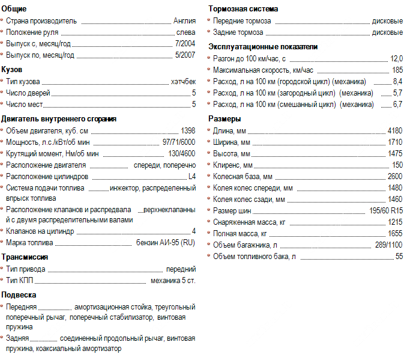

Toyota Corolla 1.4 (EU E12 2004)
Другие обозначения: кузов E120, 9-е (IX) поколение Toyota Corolla, ZZE120L
Последователи: Toyota Corolla в кузове E15 (E150) 2007 года (10-е поколение), например Auris (в варианте 97 л.с. мотор 4ZZFE 1,4 остался прежним).
Общие
Страна производитель: Англия
Положение руля: слева
Выпуск с, месяц/год: 7/2004
Выпуск по, месяц/год: 5/2007
Кузов
Тип кузова: хэтчбек
Число дверей: 5
Число мест: 5
Двигатель внутреннего сгорания
Объем двигателя, куб. см: 1398
Мощность, л.с./кВт/об мин: 97/71/6000
Крутящий момент, Нм/об мин: 130/4600
Расположение двигателя: спереди, поперечно
Расположение цилиндров: L4
Система подачи топлива: инжектор, распределенный впрыск топлива
Расположение клапанов и распредвала: верхнеклапанный с двумя распределительными валами
Клапанов на цилиндр: 4
Марка топлива: бензин АИ-95 (RU)
Трансмиссия
Тип привода: передний
Тип КПП: механика 5ст.
Подвеска
Передняя: амортизационная стойка, треугольный поперечный рычаг, поперечный стабилизатор, винтовая пружина
Задняя: соединенный продольный рычаг, винтовая пружина, коаксиальный амортизатор
Тормозная система
Передние тормоза: дисковые
Задние тормоза: дисковые
Эксплуатационные показатели
Разгон до 100 км/час, с: 12,0
Максимальная скорость, км/час: 185
Расход, л на 100 км (городской цикл) (механика): 8,4
Расход, л на 100 км (загородный цикл) (механика): 5,7
Расход, л на 100 км (смешанный цикл) (механика): 6,7
Размеры
Длина, мм: 4180
Ширина, мм: 1710
Высота, мм: 1475
Клиренс, мм: 150
Колесная база, мм: 2600
Колея колес спереди, мм: 1480
Колея колес сзади, мм: 1460
Размер шин: 195/50 R15
Снаряженная масса, кг: 1215
Полная масса, кг: 1655
Объем багажника, л: 289/1100
Объем топливного бака, л 55
